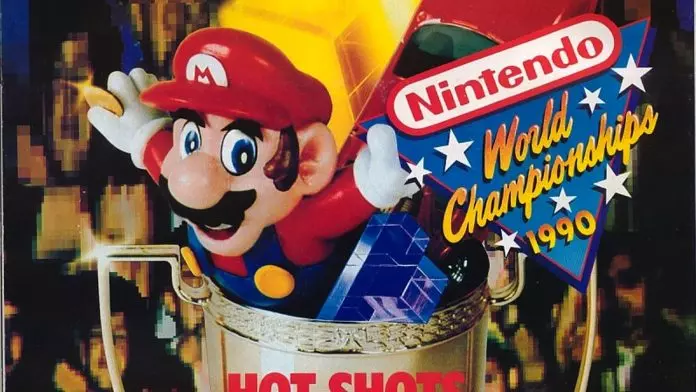
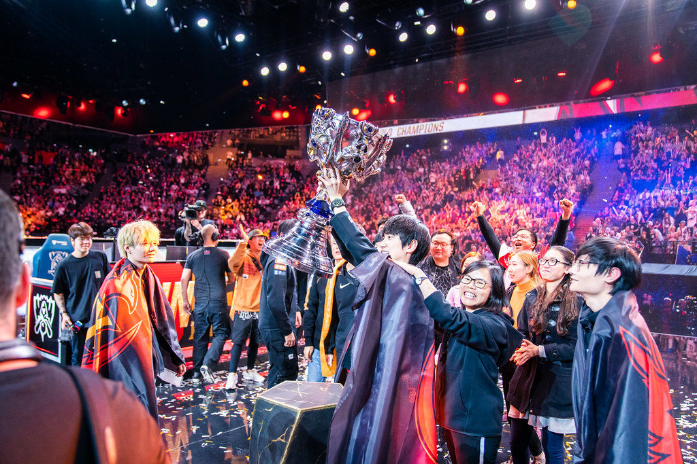

El primer campeonato de la historia.
En octubre de 1972, la Universidad de Standford celebró una competición de Spacewar! Llamaron al evento “olimpiadas intergalácticas”, y los asistentes bebieron cerveza gratis. El premio para el ganador fue una suscripción de un año a la famosa revista Rolling Stone.
Quien hizo germinar las semillas que Spacewar! había sembrado fue Atari, 8 años después. En 1980 la compañía organizó el primer torneo a gran escala de la historia de los eSports. Consistió en sacar la mejor puntuación al popular Space Invaders (el matamarcianos por excelencia). Compitieron más de 10.000 personas de todo Estados Unidos y, dadas las limitaciones técnicas de la época, de forma presencial en Nueva York. La ganadora del Space Invaders National Championship fue Rebecca Heineman. Se convirtió en la primera persona en ganar un torneo nacional de videojuegos. Posteriormente, desarrolló una exitosa carrera como programadora del sector.
Nintendo y el futuro.
Entre el 8 y el 11 de marzo de 1990 la compañía de Super Mario y The Legend of Zelda celebró el primer Nintendo World Championship. Se realizó en 29 ciudades de Estados Unidos con los juegos Super Mario Bros., Tetris, y Rad Racer. Consistió en distintas pruebas, ya fueran individuales, o por parejas. Aunque no hubo una lista oficial de ganadores, este honor se lo llevó más tarde Thor Aackerlund. De forma paralela al torneo, la revista Nintendo Power hizo un concurso en el que regalaban algo muy especial. Se trataba de un cartucho de NES dorado con los tres juegos de la competición. En la actualidad está valorado en más de 15.000$. Por otra parte, hubo otro Nintendo World Championship similar cuatro años después, pero no tuvo la repercusión del primero.
Sin embargo, la fiebre de Pokémon, a partir de 1996, impulsó de nuevo a Nintendo a hacer eventos competitivos. Pero no con las ediciones Roja y Azul. El detonante fue la salida de Pokémon Stadium en el año 2000, que dio una espectacularidad nunca antes vista en la saga. Era un videojuego en 3D para Nintendo 64. Lo que lo hacía único es que se podían usar los equipos entrenados en los cartuchos de Game Boy. Ese mismo año se realizaron competiciones nacionales por todo el globo, buscando a los mejores entrenadores. El campeón de España fue un jovencísimo Sergio García Maroto, que luego compitió contra los mejores de Europa. Fue tan buena su actuación, que consiguió clasificarse para el Campeonato Mundial de Sídney, en Australia, donde obtuvo el tercer puesto.
League of legends el rey de los Esports.
Con el inicio de la temporada uno llegaron los rangos, las divisiones y las partidas competitivas al League of Legends, lo que fue el puntapié inicial para el comienzo de los torneos de esports. Ahora había tablas y ranking donde figuraban los mejores jugadores, y era un incentivo más para mejorar y destacar por sobre el resto. Empezaron a disputarse los primeros certámenes, y la frutilla del postre fue el Season One Championship, una suerte de Mundial que reunió a equipos de Norteamérica, Europa y el Sudeste Asiático en Suecia, más precisamente durante la Dreamhack Summer 2011. Aquel certamen repartió $100.000 USD y se lo adjudicó Fnatic, del Viejo Continente, que hasta el momento es la única escuadra no asiática en haberse coronado. La final contra All Agains Authority tuvo 210.000 espectadores simultáneos y el campeonato más de 1.600.000 viewers únicos.
Aquella fue una premisa que la compañía mantiene hasta la actualidad, y el hecho de estar tan encima de los campeonatos, tanto de los propios como de terceros, establecer fechas y ser parte de la estructura, fue una de las claves para que el League of Legends le saque una cabeza de ventaja a muchos de sus competidores, incluso hoy en día.
Los certámenes se fueron expandiendo a gran parte del globo, y llegaron a Latinoamérica en 2014, con las primeras Finales Regionales y las Paradas Competitivas, que enfrentaban a equipos locales en diferentes países. Los torneos fueron muy bien recibidos por el público, que colmó estadios en Argentina, Chile, Colombia y México. Ya en 2015 Latam vivió algo icónico para la época con la consolidación de la Copa Latinoamérica Sur y la Liga Latinoamérica Norte. Certámenes con ocho equipos, cada uno con Gaming House, y un calendario que incluía fase regular y playoff, que se disputaban en las oficinas de Riot. A eso se le sumaba una final presencial.